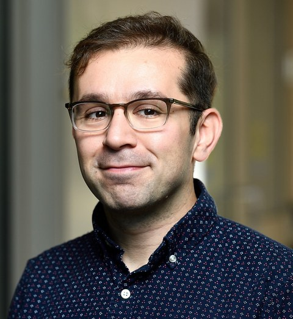
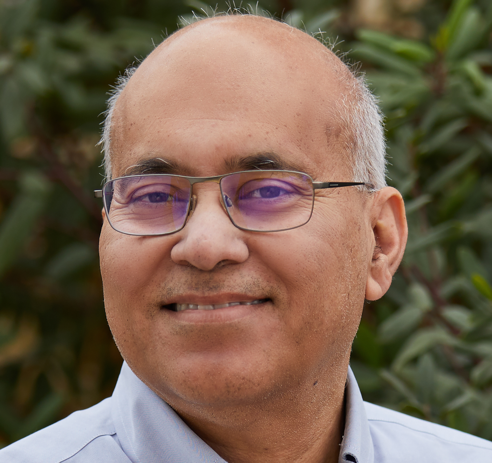
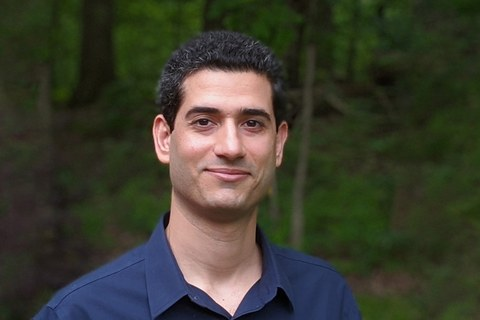
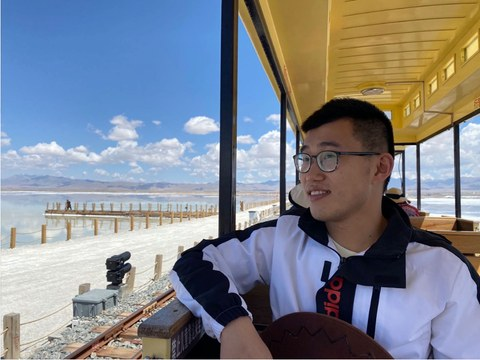

Generalize to new tasks
What transfers from data the agent never generated (web-scale text, images, video, code, and others’ demonstrations) to new environments, tasks, and embodiments?
Generalization, reasoning, and learning through interaction. What can general-purpose agents bring to physical action, and what must they learn from the world?
General-purpose agents now interpret observations, write programs, call tools, and act on the world. When one succeeds, it is rarely clear why. Was it pretrained knowledge, extra reasoning at decision time, a specialist controller, or experience gained through interaction? This workshop uses the physical world as a test bed for that machine-learning question.
What counts as physical? Any setting where an agent's actions change a physical process and feedback comes from the world or a physics simulator: robots and vehicles, but also energy and industrial control, laboratory automation, and other physical systems.
What transfers from data the agent never generated (web-scale text, images, video, code, and others’ demonstrations) to new environments, tasks, and embodiments?
When does extra computation at decision time (planning, search, code generation, simulation) improve closed-loop decisions, with no new feedback from the world?
How can the agent’s own actions and their consequences revise its memory, world model, strategy, or parameters?
We especially welcome careful comparisons, diagnostic evaluations, work in progress, and negative results.
The workshop connects language and coding agents with multimodal learning, reinforcement learning, robotics, autonomous driving, simulation, and ML for physical systems. We ask for evidence that explains a gain: ablations, scaling with computation or interaction, and tests on held-out tasks.
Non-archival research papers up to 8 pages and short papers of 2–4 pages excluding references and appendices. Physical systems and simulation are both welcome. Hardware is not required. Negative results and analysis are welcome.
Position papers welcome. Submit them to the short-paper track. A position paper should state a testable claim about where physical competence comes from and propose an experiment that could support or refute it. Accepted positions will feed the workshop’s experimental agenda.
Submissions are planned to be anonymous, with at least two reviews and conflict-aware assignments. AI assistance is permitted with disclosure of substantive use; authors remain responsible for originality and accuracy. Short papers, including position papers, must be primarily human-authored. Submission instructions and a link will be added when the call opens.
Speaker topics are tentative.
UC Berkeley
Organizer; opens the workshop and moderates the panel
Moderator · ConfirmedMIT
Robot learning and planning
Panelist · Tentative
Johns Hopkins University
Reasoning-driven AI systems
Speaker & panelistPrinceton University
Generalization guarantees for robots
Speaker · Confirmed
UC Berkeley
Learning from sensorimotor experience
Speaker & panelistStanford University & NVIDIA
Autonomous systems
Speaker · ConfirmedInria
Visual understanding and manipulation
Panelist · ConfirmedQwen, Alibaba
General-purpose agents and vision–language–action models
Speaker · ConfirmedAdelaide University
Vision, language, and action
Speaker · ConfirmedNYU & Google DeepMind
Generative world models and RL
Speaker · ConfirmedUCLA
Computer vision and robot learning
Panelist · ConfirmedAll milestones are subject to workshop acceptance and the final conference schedule. AoE means Anywhere on Earth.
What should count as reasoning in a physical agent, and which experiments can distinguish the benefits of reasoning, interaction, and stronger controllers?

Maani GhaffariUniversity of Michigan
Yi XuBosch ResearchNo. The proposal welcomes simulation-only work, along with work on physical systems.
Yes, if an agent acts on a physical process (for example, energy or industrial control, or laboratory automation) and the paper addresses transfer, reasoning, or learning from interaction. Application results alone are out of scope.
A clear, testable claim about where physical competence comes from (pretraining, inference-time reasoning, or interaction) and a concrete experiment that could support or refute it. Submit it to the 2–4 page short-paper track.
Yes. Methods, theory, diagnostic evaluations, negative results, position papers, and ongoing research are within scope.
The proposed research and short-paper tracks are non-archival. Final submission details will be published with the call.
The organizers plan to accommodate exceptional circumstances, such as visa issues, by displaying a poster on the contributor’s behalf and, with permission, hosting a prerecorded presentation.